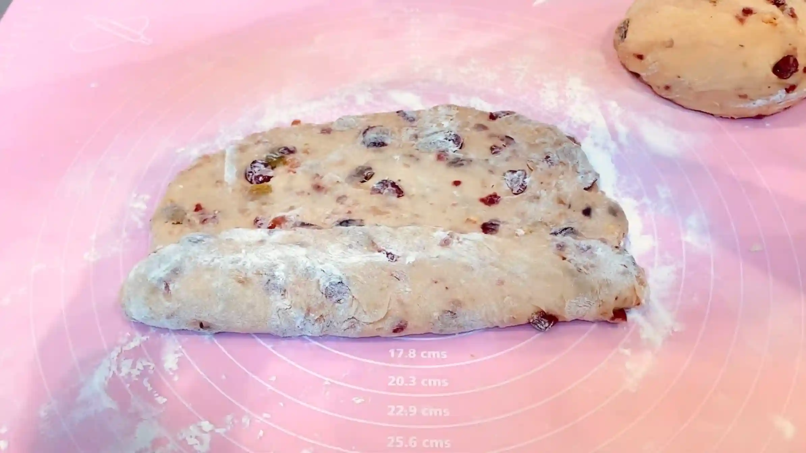
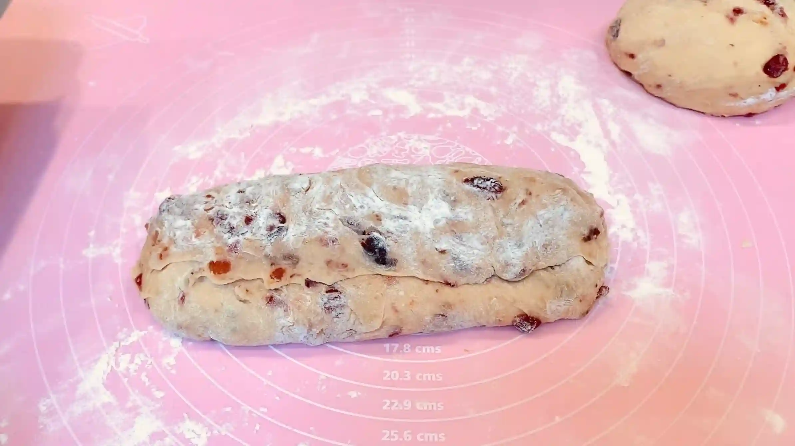
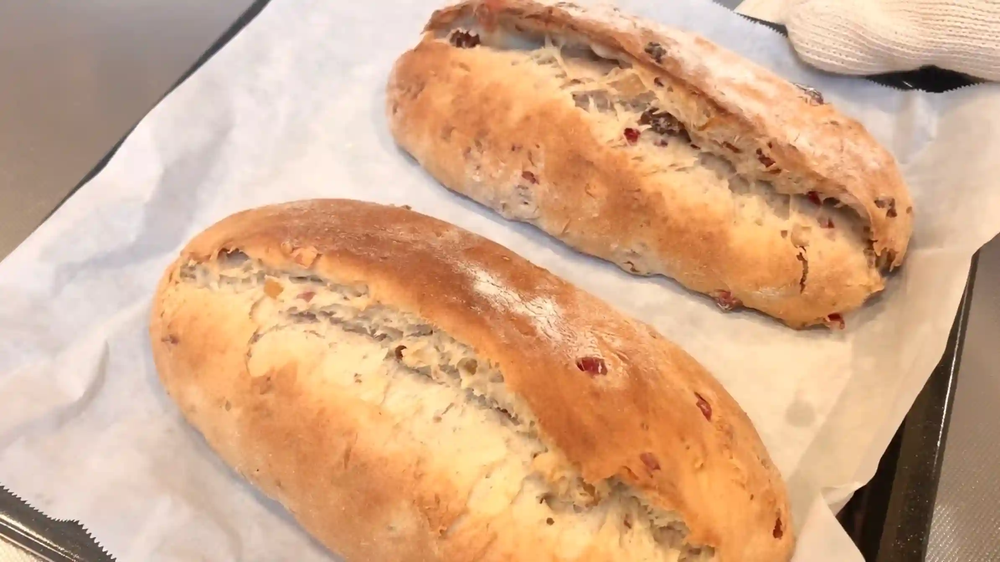

材料 2個分
※粉量を変えると自動計算されます
ドライフルーツのラム酒漬け
自家製ローマジパン
生地
仕上げ
作り方
ドライフルーツのラム酒漬け
STEP 1
ドライフルーツをラム酒に一日漬けておく
瓶などにドライフルーツとラム酒を入れ、一日漬け込みます。漬け終わったラム酒は焼き上がったシュトーレンに塗るため、大切にとっておきます。
瓶などにドライフルーツとラム酒を入れ、一日漬け込みます。漬け終わったラム酒は焼き上がったシュトーレンに塗るため、大切にとっておきます。
自家製ローマジパン
STEP 1
アーモンドプードルとグラニュー糖を混ぜる
材料がダマにならないように、先に混ぜ合わせておきます。
材料がダマにならないように、先に混ぜ合わせておきます。
STEP 2
卵白を少しずつ加えて練る
卵白を一度に加えると柔らかくなりすぎることがあるため、少しずつ加えながら練ります。まとまりが出て、手で扱えるくらいの硬さになれば十分です。卵白は一度に全量を使わず、生地の状態を見ながら加えるのがポイントです。
卵白を一度に加えると柔らかくなりすぎることがあるため、少しずつ加えながら練ります。まとまりが出て、手で扱えるくらいの硬さになれば十分です。卵白は一度に全量を使わず、生地の状態を見ながら加えるのがポイントです。
STEP 3
2つに分け、ラップにのせる
シュトーレン2本分のマジパンを作るため、2つに分けてラップにのせます。
シュトーレン2本分のマジパンを作るため、2つに分けてラップにのせます。
STEP 4
ラップを転がして棒状に成形する（[動画 02:44]）
ラップで包み、転がしながら20㎝程の棒状に成形します。
ラップで包み、転がしながら20㎝程の棒状に成形します。
STEP 5
冷凍する
柔らかい状態では扱いにくいため、冷やし固め、生地で包みやすい状態にしておきます。
柔らかい状態では扱いにくいため、冷やし固め、生地で包みやすい状態にしておきます。
生地
STEP 1
ホームベーカリーで生地を作る
ホームベーカリーに材料をセットして「生地コース」を選び、次の工程へ進みます。
ホームベーカリーに材料をセットして「生地コース」を選び、次の工程へ進みます。
STEP 2
生地を混ぜ始め20分経ったら、ドライフルーツとクルミを加える
生地のベタつきを抑えるため、ドライフルーツは水気をしっかり切ってから加えます。ホームベーカリーにドライフルーツやナッツの「自動投入機能」がある場合は、そちらを利用してください。
生地のベタつきを抑えるため、ドライフルーツは水気をしっかり切ってから加えます。ホームベーカリーにドライフルーツやナッツの「自動投入機能」がある場合は、そちらを利用してください。
STEP 3
打ち粉をした台に生地を取り出す（[動画 05:58]）
水分が多い生地は、やわらかくベタつきやすいため、打ち粉をした台に取り出します。
水分が多い生地は、やわらかくベタつきやすいため、打ち粉をした台に取り出します。
STEP 4
生地を2分割して丸め、ラップをして常温で20分おく（[動画 06:29]）
生地をスケッパーなどで手早く分け、表面がなめらかになるよう軽く丸めます。ここで休ませることで生地を落ち着かせ、次の工程で伸ばしやすくなります。
生地をスケッパーなどで手早く分け、表面がなめらかになるよう軽く丸めます。ここで休ませることで生地を落ち着かせ、次の工程で伸ばしやすくなります。
STEP 5
生地を20㎝四方に伸ばす
めん棒を使い、全体の厚みがなるべく均一になるよう、20㎝四方に伸ばします。生地は一つずつ成形するため、もう一つの生地は丸めた状態で置いておきます。
めん棒を使い、全体の厚みがなるべく均一になるよう、20㎝四方に伸ばします。生地は一つずつ成形するため、もう一つの生地は丸めた状態で置いておきます。
STEP 6
生地の1/3を折りたたむ（[動画 07:33]）
生地の1/3を手前から折りたたみ、ローマジパンをおく土台を作ります。
生地の1/3を手前から折りたたみ、ローマジパンをおく土台を作ります。

STEP 7
ローマジパンをのせる（[動画 07:44]）
生地の中央に、冷凍しておいたローマジパンをのせます。中央に芯ができるように置くことで、焼き上がったときにローマジパンを中心とした厚みのある形に仕上がります。
生地の中央に、冷凍しておいたローマジパンをのせます。中央に芯ができるように置くことで、焼き上がったときにローマジパンを中心とした厚みのある形に仕上がります。
STEP 8
上から生地をかぶせ、とじ目を軽く閉じる（[動画 07:49]）
残りの生地をローマジパンにかぶせ、包みます。このとき中央を平らに押さえず、ローマジパンを芯にして中央がふっくらと盛り上がるように形を整えます。最後にとじ目を軽く押さえて閉じます。成形が終わったら、残りの生地も同様の手順で成形します。
残りの生地をローマジパンにかぶせ、包みます。このとき中央を平らに押さえず、ローマジパンを芯にして中央がふっくらと盛り上がるように形を整えます。最後にとじ目を軽く押さえて閉じます。成形が終わったら、残りの生地も同様の手順で成形します。

STEP 9
天板に移し、ラップをして常温で1時間おく
成形後にもう一度休ませることで、生地をふっくらと発酵させてから焼き上げます。
成形後にもう一度休ませることで、生地をふっくらと発酵させてから焼き上げます。
STEP 10
予熱したオーブン200℃で40分焼く
一般的なレシピでは180℃くらいの低めの温度で焼くことが多いようですが、我が家のオーブンでは200℃でちょうど良く焼けました。焼き時間や温度は目安とし、ご家庭のオーブンによって調整してください。
一般的なレシピでは180℃くらいの低めの温度で焼くことが多いようですが、我が家のオーブンでは200℃でちょうど良く焼けました。焼き時間や温度は目安とし、ご家庭のオーブンによって調整してください。

STEP 11
焼き上がりにラム酒と溶かしバターを塗る（[動画 09:59]）
焼き上がり直後は生地が膨らみ、とじ目が割れていることもありますが、少し時間が経つと落ち着いてくるので焦らなくて大丈夫です。（私は初めとっても焦りました）熱いうちに残していたラム酒を塗り、次に溶かしバターを塗ります。
焼き上がり直後は生地が膨らみ、とじ目が割れていることもありますが、少し時間が経つと落ち着いてくるので焦らなくて大丈夫です。（私は初めとっても焦りました）熱いうちに残していたラム酒を塗り、次に溶かしバターを塗ります。
STEP 12
冷めたら粉砂糖をふってラップで密閉し、二日程冷蔵する（[動画 10:47]）
シュトーレンが完全に冷めてから粉砂糖を全体にたっぷりふり、ラップでぴったり包んで、冷蔵庫で二日ほど寝かせます。ドライフルーツやラム酒、バターの風味が生地になじみ、シュトーレンらしい味わいになります。
シュトーレンが完全に冷めてから粉砂糖を全体にたっぷりふり、ラップでぴったり包んで、冷蔵庫で二日ほど寝かせます。ドライフルーツやラム酒、バターの風味が生地になじみ、シュトーレンらしい味わいになります。
STEP 13
保存の目安は2週間程ですが、なるべくお早めにお召し上がりください
家庭で作るシュトーレンは市販品のような保存性があるとは限りません。本レシピでは、二日ほど冷蔵して味をなじませた後、食べない分は冷凍保存がおすすめです。2週間程度を目安とし、お早めにお召し上がりください。
家庭で作るシュトーレンは市販品のような保存性があるとは限りません。本レシピでは、二日ほど冷蔵して味をなじませた後、食べない分は冷凍保存がおすすめです。2週間程度を目安とし、お早めにお召し上がりください。
動画でチェック
おいしく作るためのワンポイントコラム
本場ドイツでは「シュトレンと正式に名乗るには法律で材料の割合が厳格に決まっている」というほど、伝統的で格式高いお菓子。今回は日本でも馴染み深い『シュトーレン』として、おうちで楽しく作れるレシピをご紹介します！ホームベーカリーとドライイーストで作る、クリスマスにぴったりの手作りシュトーレン。美味しく焼き上げるための「3つのコツ」をまとめました。
① 自家製ローマジパンのコツ
今回はシュトーレンの芯として、細工用の甘いマジパンではなく、アーモンドの比率が非常に高い『ローマジパン』を入れるのがポイント。砂糖が多い通常のマジパンとは違い、アーモンドの風味と油分が凝縮されているため、生地の中に入れて一緒に焼き上げることでナッツの芳醇なコクが内側からじわじわと生地全体に染み渡り、日ごとにしっとり感が増していく効果があります。熟成のおいしさを引き出すちょっとしたこだわりポイントです！
② スパイスのコツ
生地に加えるオールスパイスやシナモンなどには、抗菌による防腐効果だけでなく、バターの重さを引き締める効果もあります。粉に対して約30%程のバターが入るため、生地が少し重くなりがちですが、スパイスの爽やかな香りと刺激が、バターのしつこさをリッチなコクへと大変身させてくれます。また、「小麦粉の生地」「お酒の効いたフルーツ」「ナッツ」という個性の強い素材を一つにまとめる「調和剤」としても働き、ひと口、もうひと口と食べ進めたくなる「リッチな美味しさ」を生み出してくれます。本レシピではオールスパイス（シナモン・クローブ・ナツメグ）を入れていますが、お好みでいろんなスパイスを試してみるのも楽しいですね！
③ 長期保存のメカニズム
シュトーレンが長持ちする理由は、焼き上がりの熱いうちにたっぷりの溶かしバターをコーティングして空気（酸素）をシャットアウトし、粉砂糖で湿気を遮断して酸化を防ぐ構造にあります。本場ドイツの極寒で乾燥した気候では数ヶ月、日本の冬であれば常温で約2〜3週間が保存の目安と言われています。ただ、暖房で部屋が高温多湿になりがちなので、冷凍保存するのが一番安全でおすすめですね！食べる際は、切り口から乾燥しやすいので真ん中で2等分に切って、断面同士をぴったりくっつけてラップで密閉するのが、熟成を楽しみながら美味しくいただくコツです。
有名店のシュトーレンはお値段が高めで少し手が出にくいこともありますが、おうちで手作りを楽しむのも幸せで特別なもの。シュトーレンの熟成を少しずつ味わいながら、素敵なホリデーシーズンをお過ごしください。
① 自家製ローマジパンのコツ
今回はシュトーレンの芯として、細工用の甘いマジパンではなく、アーモンドの比率が非常に高い『ローマジパン』を入れるのがポイント。砂糖が多い通常のマジパンとは違い、アーモンドの風味と油分が凝縮されているため、生地の中に入れて一緒に焼き上げることでナッツの芳醇なコクが内側からじわじわと生地全体に染み渡り、日ごとにしっとり感が増していく効果があります。熟成のおいしさを引き出すちょっとしたこだわりポイントです！
② スパイスのコツ
生地に加えるオールスパイスやシナモンなどには、抗菌による防腐効果だけでなく、バターの重さを引き締める効果もあります。粉に対して約30%程のバターが入るため、生地が少し重くなりがちですが、スパイスの爽やかな香りと刺激が、バターのしつこさをリッチなコクへと大変身させてくれます。また、「小麦粉の生地」「お酒の効いたフルーツ」「ナッツ」という個性の強い素材を一つにまとめる「調和剤」としても働き、ひと口、もうひと口と食べ進めたくなる「リッチな美味しさ」を生み出してくれます。本レシピではオールスパイス（シナモン・クローブ・ナツメグ）を入れていますが、お好みでいろんなスパイスを試してみるのも楽しいですね！
③ 長期保存のメカニズム
シュトーレンが長持ちする理由は、焼き上がりの熱いうちにたっぷりの溶かしバターをコーティングして空気（酸素）をシャットアウトし、粉砂糖で湿気を遮断して酸化を防ぐ構造にあります。本場ドイツの極寒で乾燥した気候では数ヶ月、日本の冬であれば常温で約2〜3週間が保存の目安と言われています。ただ、暖房で部屋が高温多湿になりがちなので、冷凍保存するのが一番安全でおすすめですね！食べる際は、切り口から乾燥しやすいので真ん中で2等分に切って、断面同士をぴったりくっつけてラップで密閉するのが、熟成を楽しみながら美味しくいただくコツです。
有名店のシュトーレンはお値段が高めで少し手が出にくいこともありますが、おうちで手作りを楽しむのも幸せで特別なもの。シュトーレンの熟成を少しずつ味わいながら、素敵なホリデーシーズンをお過ごしください。


ホリデーシーズンにじっくり味わいたい、ドイツの伝統菓子『シュトーレン』をご紹介します！本場ドイツでは「シュトレン」と呼ばれますが、今回は日本でも馴染み深い「シュトーレン」としてお届けします。
コラムでは「自家製ローマジパンのコツ」「スパイスのコツ」「長期保存のメカニズム」の3つのポイントをご紹介します。